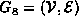
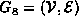
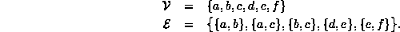
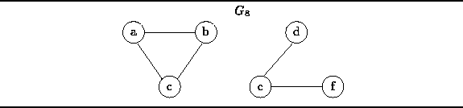
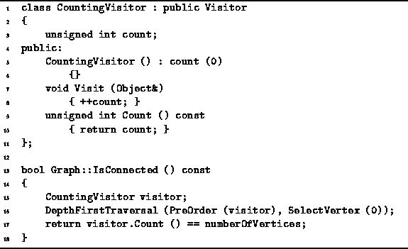

Data Structures and Algorithms
with Object-Oriented Design Patterns in C++
Data Structures and Algorithms
with Object-Oriented Design Patterns in C++
Definition (Connectedness of an Undirected Graph) An undirected graphis connected if there is a path in G between every pair of vertices in
.
Consider the undirected graph shown in Figure  .
It is tempting to interpret this figure as a picture of two graphs.
However, the figure actually represents
the undirected graph , given by
.
It is tempting to interpret this figure as a picture of two graphs.
However, the figure actually represents
the undirected graph , given by

Clearly, the graph  is not connected.
For example, there is no path between vertices a and d.
In fact, the graph
is not connected.
For example, there is no path between vertices a and d.
In fact, the graph  consists of two, unconnected parts,
each of which is a connected sub-graph.
The connected sub-graphs of a graph are called connected components .
consists of two, unconnected parts,
each of which is a connected sub-graph.
The connected sub-graphs of a graph are called connected components .

Figure: An Unconnected, Undirected Graph with Two (Connected) Components
A traversal of an undirected graph (either depth-first or breadth-first) starting from any vertex will only visit all the other vertices of the graph if that graph is connected. Therefore, there is a very simply way to test whether an undirected graph is connected: Count the number of vertices visited during a traversal of the graph. Only if all the vertices are visited is the graph connected.
Program shows how this can be implemented.
The IsConnected member function of the Graph class
is a Boolean-valued accessor that returns true if the graph is connected.
The routine is implemented using a CountingVisitor
and the DepthFirstTraversal routine.

Program: Graph Class IsConnected Member Function Definition
A CountingVisitor is a visitor that simply counts the number of vertices it visits. It has a single member variable, count, which is initialized to zero in the constructor. The Visit routine adds one the count each time it is called and the Count accessor returns the value of the count.
The worst-case running time of the IsConnected routine
is determined by the time taken by the DepthFirstTraversal.
Clearly in this case  .
Therefore, the running time of IsConnected is
.
Therefore, the running time of IsConnected is
 when adjacency matrices are used to represent the graph
and
when adjacency matrices are used to represent the graph
and  when adjacency lists are used.
when adjacency lists are used.
 Copyright © 1997 by Bruno R. Preiss, P.Eng. All rights reserved.
Copyright © 1997 by Bruno R. Preiss, P.Eng. All rights reserved.